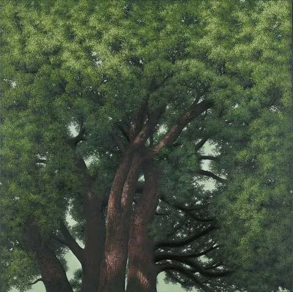

Camphrier
- Titre
- Camphrier
- Année
- 2003
- Dimensions
- 100 × 100 cm
- Technique
- Huile
- Prix
- Prix sur demande
Description de l’image (d’après ce que l’on voit, et non d’après l’artiste)
Au bas de l’image, plusieurs gros troncs brun rouge se divisent vers le haut ; au-dessus et sur les côtés, un feuillage vert dense. Entre les branches, la lumière du ciel vert blanc pâle apparaît.